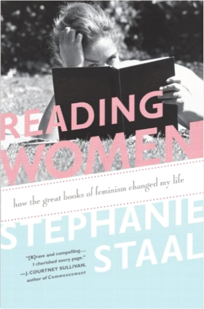
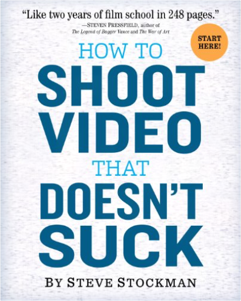
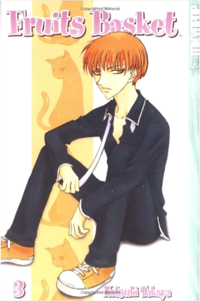
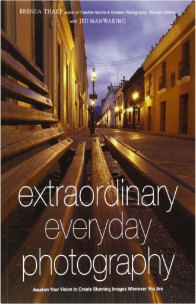

Never Far from Home: Stories from the Radio PulpitCarl Scovel, Richard Higgins Never Far from Home: Stories from the Radio PulpitCarl Scovel, Richard Higgins  The 100 short essays collected here were originally broadcast between 1979 and 1999 to rapt Sunday morning audiences on WCRB, a classical radio station near Boston. Scovel's five-minute radio sermons taught essential lessons to Bostonians of many faiths. Renowned for his preaching, for many years Scovel was pastor of King's Chapel, the historic Unitarian Universalist church on Tremont Street in Boston.  We Pledge Our Hearts: A Treasury of Poems, Quotations And Readings to Celebrate Love And MarriageEdward Searl We Pledge Our Hearts: A Treasury of Poems, Quotations And Readings to Celebrate Love And MarriageEdward Searl The journey of love and marriage is filled with many milestones, festivities and celebrations. In We Pledge Our Hearts, Unitarian Universalist minister Edward Searl has collected poetry and prose marking the many stages of love: dating and courtship, marriage and commitment, friendship and companionship. This enduring volume contains selections from ancient and modern sources, from the famous to the obscure, and from many cultures and faith traditions. Some works are previously uncollected.  The Disaster Artist: My Life Inside The Room, the Greatest Bad Movie Ever MadeGreg Sestero, Tom Bissell The Disaster Artist: My Life Inside The Room, the Greatest Bad Movie Ever MadeGreg Sestero, Tom Bissell The hilarious and inspiring story of how a mysterious misfit got past every roadblock in the Hollywood system to achieve success on his own terms: a $6 million cinematic catastrophe called The Room.  5 Centimeters per SecondMakoto Shinkai 5 Centimeters per SecondMakoto Shinkai Love can move at the speed of terminal velocity, but as award-winning director Makoto Shinkai reveals in his latest comic, it can only be shared and embraced by those who refuse to see it stop.  Secrets of Great Portrait Photography: Photographs of the Famous and InfamousBrian Smith Secrets of Great Portrait Photography: Photographs of the Famous and InfamousBrian Smith In this sexy, bold, beautiful book, photographer Brian Smith tells the stories behind the photos and lessons learned in 30 years of photographing celebrities and people in all walks of life. A Pulitzer Prize-winning photographer, Smith is the luckiest guy on the planet. He's told Bill Gates exactly what to do for an entire hour, exhibited at the Library of Congress, appeared on The X Factor, dined with the President and 3,000 of his closest friends, shared cupcakes with Anne Hathaway, and gotten drunk with George Clooney . . . all in the service of getting the perfect portrait.  Roller Derby for Beginners: Get Out of the Bleachers and on the TrackFrisky Sour Roller Derby for Beginners: Get Out of the Bleachers and on the TrackFrisky Sour Have you ever wished you could play roller derby? What’s stopping you? Roller Derby for Beginners is a quick start guide for anyone who wants to play roller derby: how to pick a league, choose gear, get started skating, and navigate a new culture. Frisky Sour, former skater and Fresh Meat coach, can't teach you how to skate from a book, but she can help you figure out where to start and how to move forward. Roller derby is harder than it looks, but it’s a little easier with some help along the way. www.rollerderbyforbeginners.com Reading Women: How the Great Books of Feminism Changed My LifeStephanie Staal When Stephanie Staal first read The Feminine Mystique in college, she found it a mildly interesting relic from another era.” But more than a decade later, as a married stay-at-home mom in the suburbs, Staal rediscovered Betty Friedan’s classic workand was surprised how much she identified with the laments and misgivings of 1950s housewives. She set out on a quest: to reenroll at Barnard and re-read the great books she had first encountered as an undergrad. How to Shoot Video That Doesn't Suck: Advice to Make Any Amateur Look Like a ProSteve Stockman How to Shoot Video That Doesn't Suck is a quick and easy guide that will make your video better instantly— whether you read it cover to cover or just skim a few chapters. It's about the language of video. How to think like a director, regardless of equipment (amateurs think about the camera, pros think about communication). It's about the rules developed over a century of movie-making—which work just as well when shooting a two-year-old's birthday party. Written by Steve Stockman, the director of Two Weeks (2007), plus TV shows, music videos, and hundreds of commercials, How to Shoot Video That Doesn't Suck explains in 74 short, pithy, insightful chapters how to tell a story and entertain your audience. How to shoot video people will want to watch. Fruits Basket Collector's Edition, Vol. 1Natsuki Takaya After a family tragedy turns her life upside down, plucky high schooler Tohru Honda takes matters into her own hands and moves out...into a tent! Unfortunately for her, she pitches her new home on private land belonging to the mysterious Sohma clan, and it isn't long before the owners discover her secret. But, as Tohru quickly finds out when the family offers to take her in, the Sohmas have a secret of their own—when touched by the opposite sex, they turn into the animals of the Chinese Zodiac! Fruits Basket, Vol. 3Natsuki Takaya It’s Valentine’s Day and you know what that means—lots of chocolates for the cutest boys at school! In this case it’s a pretty close tie between hot-headed Kyo Sohma and "Prince Charming" Yuki Sohma. Of course the kind-hearted Tohru, guest of the Sohma family, has chocolates for everyone! But when White Day comes around, what will the Sohma family give her in return? Extraordinary Everyday Photography: Awaken Your Vision to Create Stunning Images Wherever You AreBrenda Tharp, Jed Manwaring Get inspired to discover the beautiful images around you Samurai Girl: Real Bout High School #2Reiji Saiga Tokyo, Reiji Saiga In a school where martial arts are standard curriculum, it takes more than great grades to rise to the top of the class. As rival students at Daimon High throw down their best moves in all-out K-Fight battle, the action in the ring heats up more than ever. Samurai Girl Ryoko is set on breaking bones as a Samurai Nurse, but there are plenty of challengers ready to knock her out for good! And with teachers entering the ring to duke it out, all bets are off. Who has time for homework when there’s a battle to catch? |
 Made with Delicious Library
Made with Delicious LibrarySpringfield, State zipflap congrotus delicious library Bellamy, Véronique